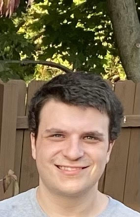

About me
I am currently a student at The University of Pittsburgh studying computer science. I am also a software development intern at the Carnegie Mellon University Software Engineering Institute.
I am currently pursuing the 5 year BS/MS program offered by the Computer Science Department here at Pitt. This will allow me to complete my bachelor's degree in the fall of 2021 and my master's degree in the fall of 2022.
I am passionate about all aspects of computer science, but my specific academic interests include compilers, programming languages, and software engineering.
Outside of the classroom, my hobbies and interests include science fiction, video games, LEGOs, and sports. I'm the Vice President of the Sports Analysis Club at Pitt. I grew up in Rochester, New York and am probably a bigger Buffalo Bills fan than you.
